<div class="textcontainer">
<p class="margin"> </p>
<h3>Weeks 10-12: Machine Building</h3>
<h4> Assembling Materials </h4>
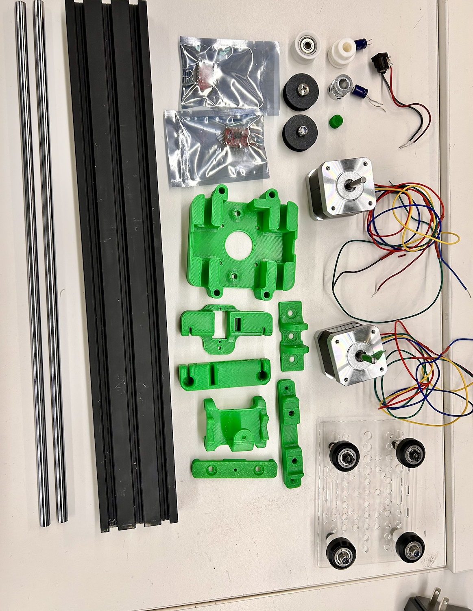
<br> </br>
<h5> We started by removing the supports from the 3D-printed green structural parts given to us. You can see the remaining support material lodged in narrow holes and tight corners, which made the task especially tedious. This was the moment we realized that tweezers were not strong enough to be effective. Instead, we started using plastic cutters for thicker support pieces and metal pokers to reach deep into the screw holes and crevices. </h5>
<br>
<h4> First Steps </h4>
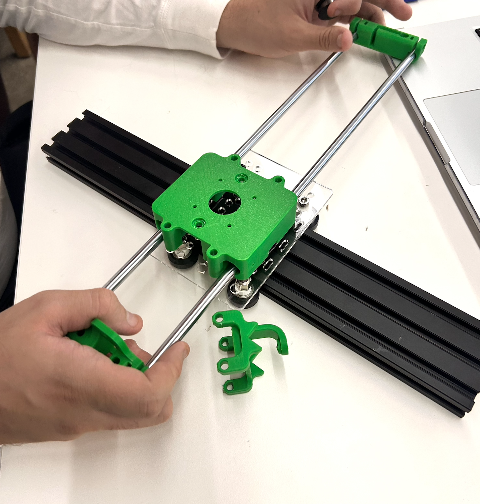
<br> </br>
<h5> After removing all the supports, we organized the 3D-printed parts on the table to assess what we had. We were trying to understand the function of each part, where gears would go, how the belt would loop around the system, and how to support the overall frame. Without instructions, we assembled the basic parts relying on various reference images we found online. This was also when we began to brainstorm how to make our machine draw using more than one pen.
</h5> <br>
<h4> Screwing Components </h4>
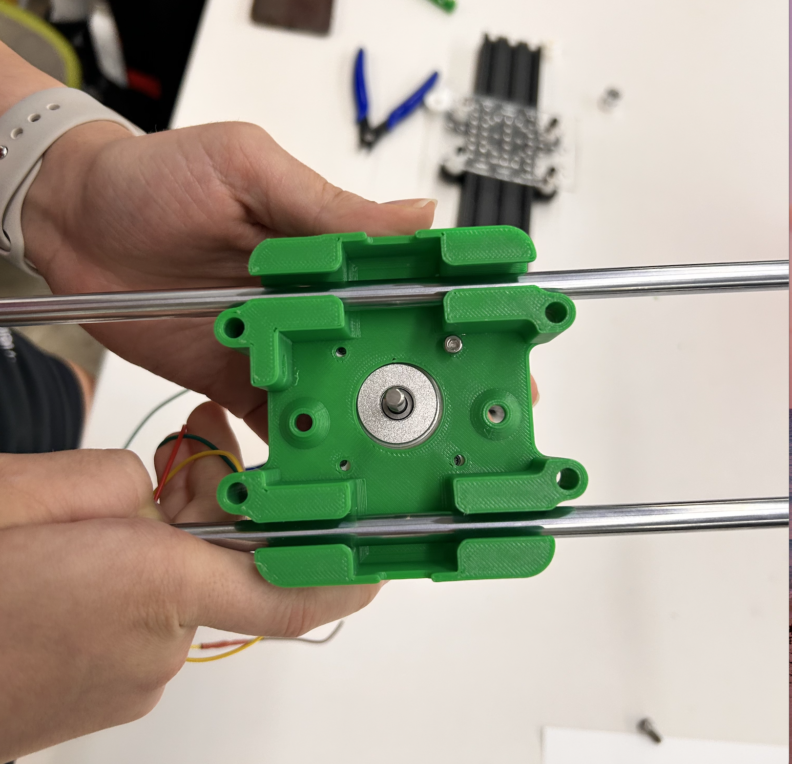
<br> </br>
<h5> We had just started testing how the frame and gears were supposed to fit together. One of the most frustrating parts was figuring out which screws worked with which holes. Some were too short, others were too wide, and we kept going back and forth swapping them out to see what would actually hold the parts together. It took a lot of patience and guessing to get it right, especially with the gears, since they needed to be secure but still able to rotate freely. Even though it was a struggle, we were finally starting to see the machine come to life. </h5> <br>
<h4> Timing Belt </h4>
<img src="./4.png" alt="generic placeholder image" style="width: 700; height: 610px;">
<br> </br>
<h5> This was a tricky process as the belt kept slipping off or not aligning properly with the gears. We had to keep adjusting the position of the motor and tensioning the belt so that it would stay on track without skipping. It was also hard to tell at first how tight the belt was supposed to be: too loose and it would not move, too tight and it would strain the motor. It was frustrating, but it helped us understand how precise things need to be when working with moving parts.
</h5> <br>
<h4> Belt Problems </h4>
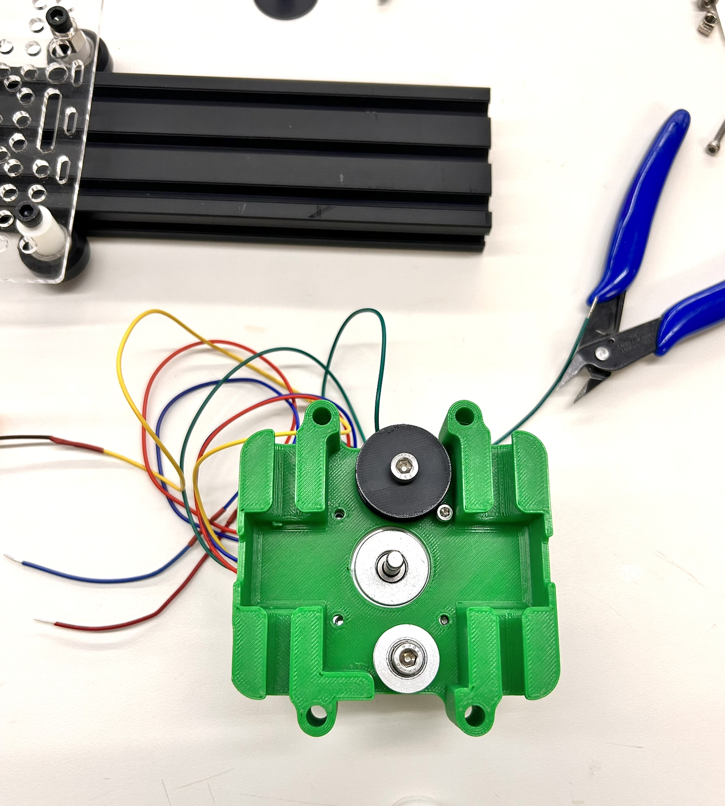
<br> </br>
<h5> We were testing how well the belt moved once everything was assembled. While it was exciting to see parts of the machine moving, we quickly ran into more problems. The belt kept skipping steps, and sometimes it would not grip properly at all. We realized part of the issue was not securing the base of the machine, as it kept shifting around when the motor started running. This made everything shake, which messed up the motion of the belt. It was a bit discouraging after all the work we had done to align everything. Still, it helped us realize that we needed to focus not just on the parts themselves, but also on how the machine sits on the surface.
</h5> <br>
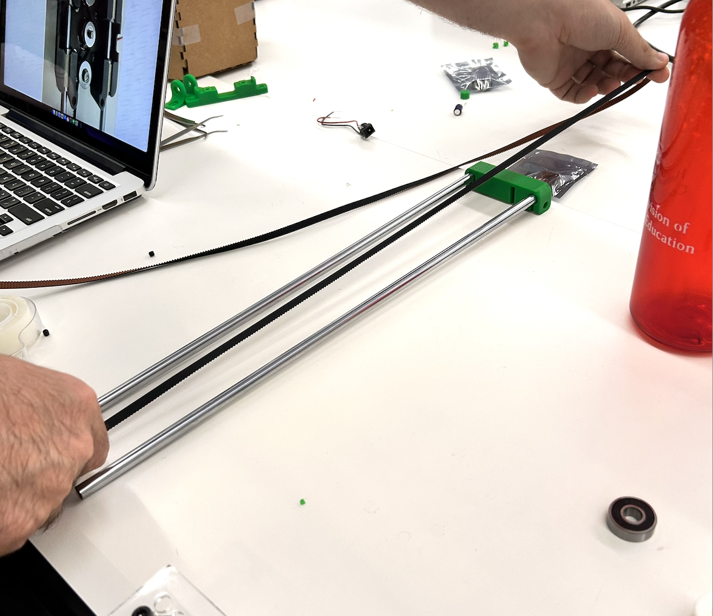
<br> </br>
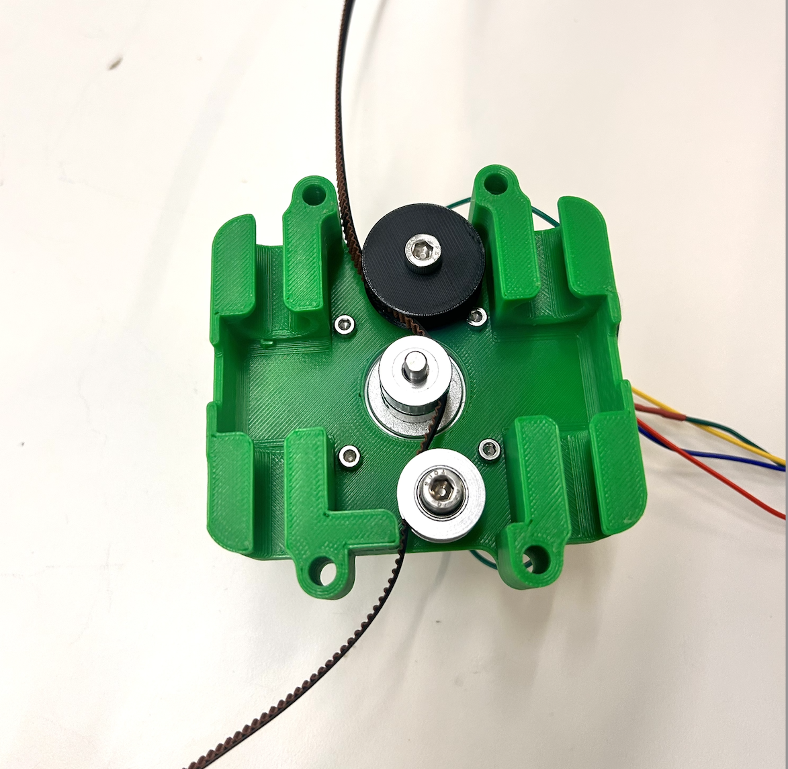
<br> </br>
<h5> The belts took up more time than they should have, and we kept on facing countless struggles with them, but shoutout to Bobby for helping us!
</h5> <br>
<h4> 3D Printing : 3 pens </h4>
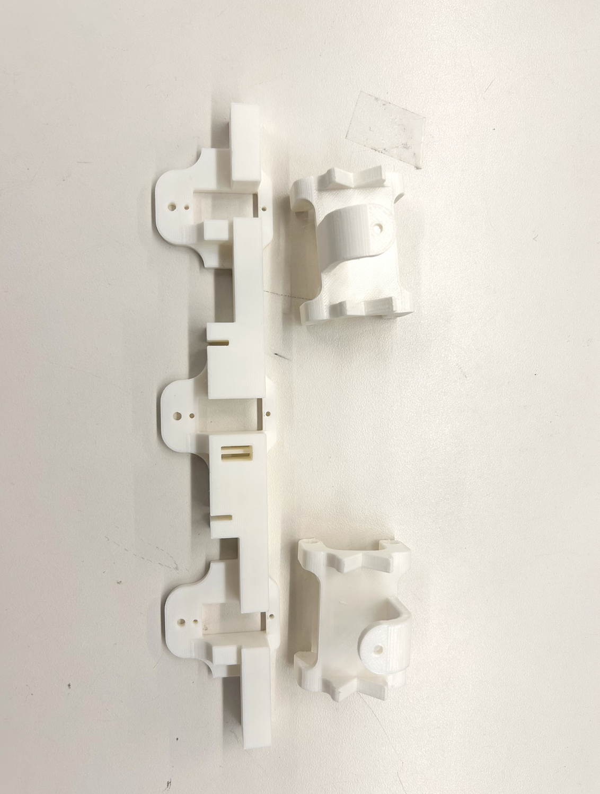
<br> </br>
Our plan was to have our art machine draw using three pens at once. The idea was to create a more complex output by moving multiple pens together across the page. Looking back, it was a really ambitious goal, and honestly, not very well thought of at the time. We did not fully consider how we would control the movement of three pens accurately or how that would affect the belt tension and frame stability. It sounded cool in theory, but we lacked a clear plan for its mechanics or code. This part of the project taught us a lot about the difference between creative ideas and technical feasibility. While we did not fully achieve the triple-pen system, experimenting with it pushed us to be more thoughtful about design limitations and realistic goals.
</h5> <br>
<br> </br>
<h4> More Assembling </h4>
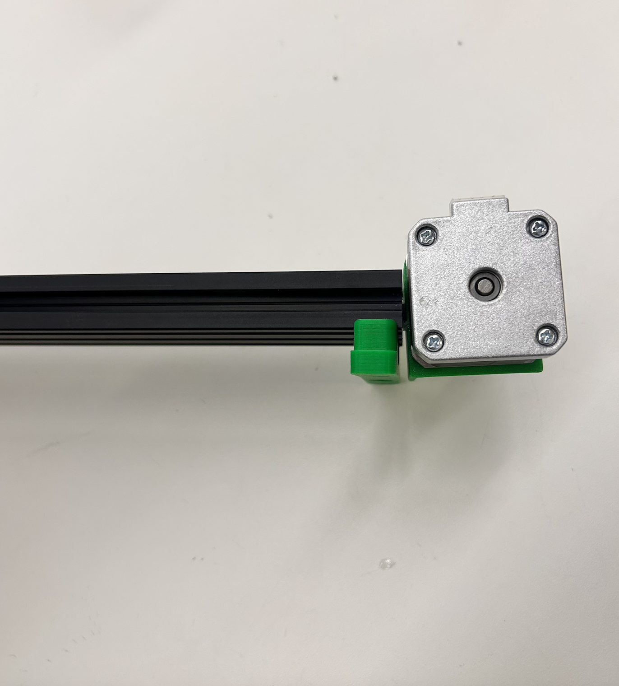
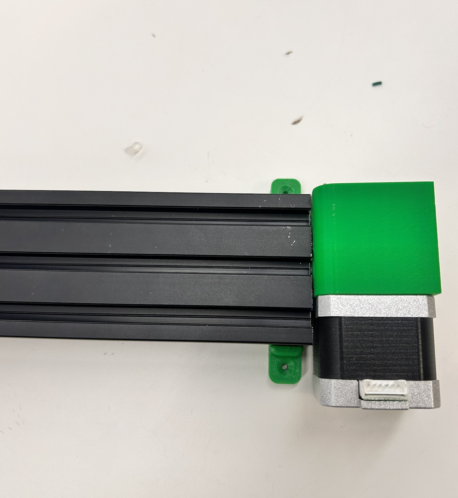
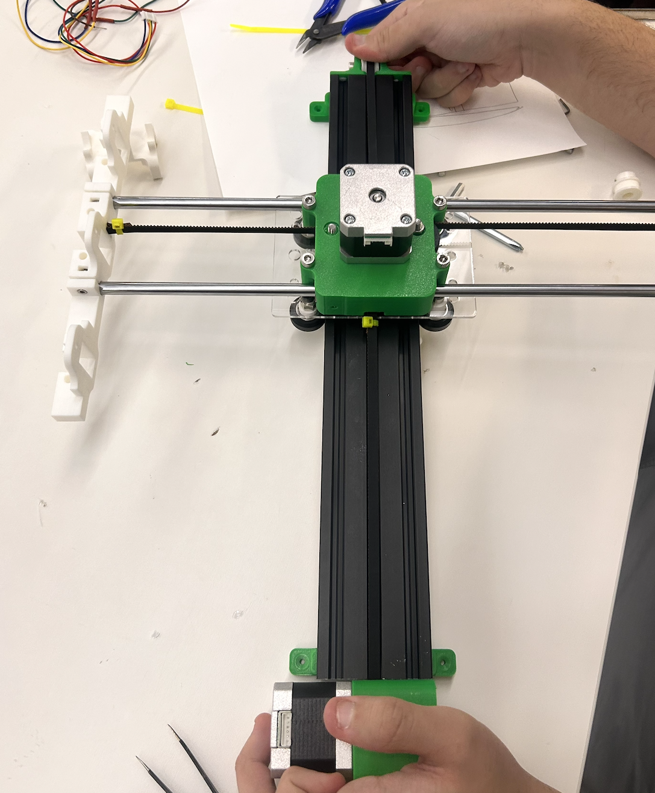
<br> </br>
<h5> We hot glued the stepper motors onto both sides of the black base, making sure they were aligned with the gear system. Once the motors were secured in place, we attached the central moving platform, which is the green part that holds the pen, on top of the frame. This piece was carefully placed so that it could slide smoothly along the X-axis, guided by the belt and supported by the pulleys driven by the motor.
</h5> <br>
<h4> Circuit </h4>
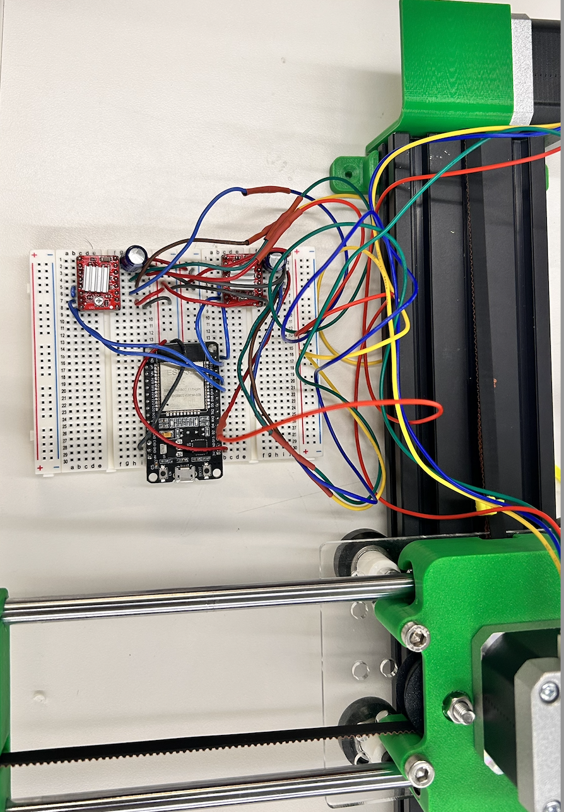
<br> </br>
Everything was connected to the breadboard, including the motor driver, microcontroller, power source, and jumper wires. At this stage, things looked pretty messy, and getting all the connections right took a lot of patience. One major challenge we ran into was that only one team member had been fully in charge of the circuit wiring. So when they were not present, the rest of us did not know what each wire did or where it was supposed to go. That experience taught us something really important: labeling wires and creating a clear wiring diagram is essential. It would have saved us a lot of time and confusion if we had made even a simple chart showing what connected where. Having a visual guide makes debugging easier and helps everyone on the team stay on the same page. </h5> <br>
<h4> First Test! </h4>
<video width="750" height="670" controls>
<source src="./10.mov" type="video/quicktime">
Your browser does not support the video tag.
</video>
</div>
<br> </br>
In this video, the drawing machine is performing its first successful test run. The pen is not yet attached but you can see the belt driving the motion smoothly, which means the motor works just fine. Even though this was no the hugest step ever, it was for us! It was proof that our circuitry, or at least parts of it, were correct :)
</h5> <br>
<br> </br>
<h4> Progress </h4>
<img src="./11.png" alt="generic placeholder image" style="width: 700; height: 610px;">
<br> </br>
As we neared the end, a few issues slowed us down. The belt kept slipping, so we had to adjust its tension several times. We also found that the X-axis carriage was not hitting the limit switch properly, which made alignment difficult and delayed progress.
Another major setback was burning our first microcontroller, likely due to a wiring mistake.
Overall, even though we did not get to implement every feature we planned, we learned a lot about troubleshooting, teamwork, and the importance of clear documentation. </h5> <br>
<br> </br>
<h4> Code </h4>
<h5> </h5> <br>
<h5> Here is a code snippet </h5>
</div>